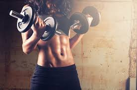

IL MONDO DEL FITNESS
Il termine fitness deriva dall'aggettivo inglese fit («adatto») e viene tradotto in lingua italiana con i termini idoneità, capacità, preparazione fisica e stato di forma fisica. Dagli anni '90 questo termine è stato adoperato sempre più frequentemente per definire lo stato di benessere fisico o la forma fisica dell'individuo.

Con il passare del tempo in molti hanno fatto si che il termine si sia consolidato e corrisponda a caratteristiche specifiche. Si può parlare di fitness in due termini: il primo che riguarda tutte quelle caratteristiche psico-fisiche che insieme offrono un quadro di buona salute: Peso corporeo non eccessivo Composizione corporea (massa grassa e massa magra) ben bilanciata Alimentazione sana e equilibrata Non fumare Non bere alcolici e utilizzare droghe Non abusare di medicinali Esami ematici regolari Basso livello di stress Sistema cardio-respiratorio in buone condizioni Assenza di patologie importanti a livello dei maggiori apparati corporei Il secondo modo, in cui si può parlare di fitness, riguarda la parte pratica, ovvero tutte quelle capacità condizionali e coordinative che se ben sviluppate e allenate, portano il soggetto verso uno stato di sempre maggior benessere. Le caratteristiche di cui si sta parlando sono: Forza Velocità Resistenza Coordinazione Mobilità articolare Equilibrio Tutti gli elementi che abbiamo elencato, sono allo stesso modo importanti se si vuole raggiungere un buon livello di salute, scongiurando l'insorgere di molteplici patologie e se si vuole avere un buon equilibro psicologico, importante per avere buone relazioni con la gente che ci circonda e per essere in pace con se stessi.
FEDERAZIONE UFFICIALI FITNESS
Federazione Italiana Fitness La Federazione Italiana Fitness promuove e diffonde la cultura del fitness. Attualmente le aree di intervento racchiudono tutti i settori del fitness, dalla formazione all’assistenza e consulenza, sino all’agonismo, con attività distribuite lungo tutto l’arco dell’anno in numerose località italiane. Per favorire l’aggiornamento degli associati, la FIF promuove anche un settore editoriale che produce materiale didattico e la rivista “Performance” distribuita in tutte le palestre.
CORSO ISTRUTTORE FITNESS
FONDAMENTI PER LA REALIZZAZIONE DI PROGRAMMI DI TONIFICAZIONE, CIRCUIT TRAINING CARDIO FITNESS E BODY BUILDING
Programma del corso • Introduzione e presentazione • Teoria dell'allenamento • Concetto di frequenza cardiaca massima e formula di Cooper con esempi e implicazioni delle varie percentuali cardiache allenanti • Teoria della parte pratica con visione di filmati di esercizi e commenti • Parte pratica spalle/petto/dorso • Proposte schede 1ª parte • Allenamenti a circuito CFT-AAS-AC-PAC • Analisi e confronto sulla parte on line • Schede di allenamento 2ª parte • Parte pratica braccia, lombari, addominali • Concetto di intensità (2 tecniche come stripping e rest pause), tono, forza, rapporto ripetizioni/fibre percentuali di carico • Costruzione schede • Parte pratica femorali, quadricipiti, polpacci • Ripasso parti on line e della pratica con domande • Cenni di teoria e pratuca delle Stretching e statico • Concetti macro e micro nutrimenti. Dieta mediterranea e altre filosofie alimentari • Test scritto e correzione elaborati • Esame teorico pratico Titolo rilasciato Diploma di Personal Trainer riconosciuto in ambito internazionale dall’European Fitness Association e in ambito nazionale dall' ,ente di promozione sportiva riconosciuto dal Coni e dal Ministero dell’Interno. Il diploma è patrocinato dall'Università Telematica San Raffaele Roma. Requisiti richiesti Si consiglia una esperienza di base in sala pesi.